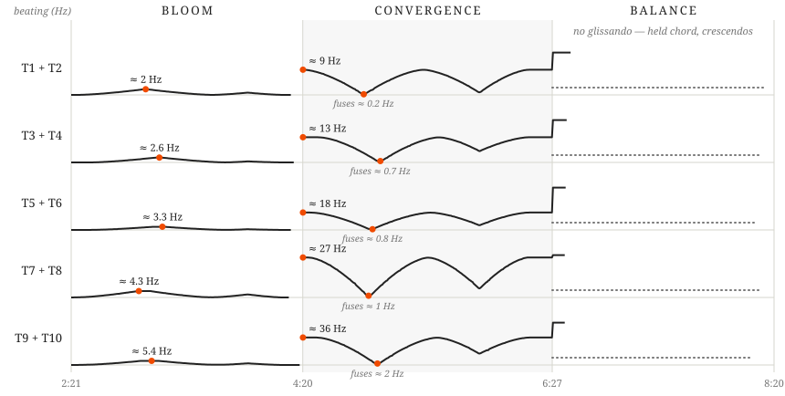

The middle movement of this piece uses acoustic beating as the central musical material. Pairs of performers use micro-glissandos over long durations to generate “beating glissandos,” where the acoustic beating swells from slow to fast and vice versa. Pairs of performers glissando away from each other — one goes up while the other goes down — and then back together. Some may be familiar with this technique as a guitar-tuning method — adjust until there is no beating, and the strings are in tune. Think of the pair of tubas as the two strings and the glissandos as the tuning pegs — in this case, both tuning pegs move.
There are three sections in this movement, and the beating is sequenced as follows:

I have prepared demo recordings at the links below. These demonstrate how the maximum and minimum beating levels sound in each section for each pair, and then provide a two-tuba demo of each beating section.
- Tuba 1 + Tuba 2 — https://youtu.be/n9HFN30aGYo
- Tuba 3 + Tuba 4 — https://youtu.be/PnJre7J_xgI
- Tuba 5 + Tuba 6 — https://youtu.be/zlqiG6Dki2E
- Tuba 7 + Tuba 8 — https://youtu.be/OZHjSIHwhcU
- Tuba 9 + Tuba 10 — https://youtu.be/HiSCkZz7AuI
Notation

There are two curves: a green one at the bottom of the staff and an orange one at the top. The green curve indicates dynamic level; the orange curve indicates beating/glissando level. The dotted vertical go-lines are rearticulation points — the rearticulation should happen at the go-line: breathe before, and rearticulate at the line. The pitches at the beginning of each section are approximate; calibrate using beating speed and timbre. The final section has no glissando — it is a held chord articulated through a variety of crescendos.